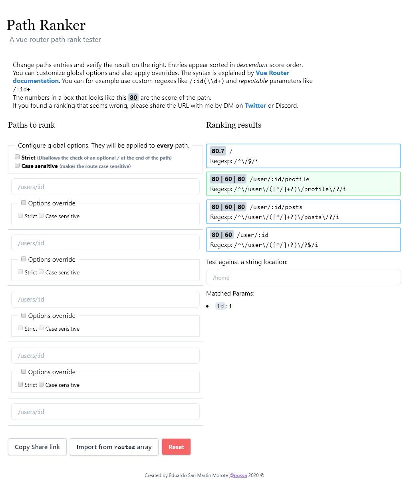

VueRouter4路由权重
Vue3正式版发布也有一段时间了，各个相关组件也趋于稳定。前些天听了VueRouter4的一个分享会，了解到了新版的设计理念和一些主要的改动，其中一个改动就是舍弃了原来的路由顺序匹配，改为计算权重的方式。趁着这个上午，把其中的部分逻辑研究一下。
路由权重
路由权重也不是一个新的概念，在nginx里就有类似的实现。nginx将路径匹配分为：精确匹配、普通字符匹配、正则匹配。location的书写顺序只会影响同类的匹配，nginx会按照一个特定的分类顺序进行匹配。总的来说nginx匹配的目标是精确、规则优先，最后才会考虑采用最长前缀匹配的方式。
除了nginx里有隐性权重（按照大类+顺序）这个概念外，CSS选择器的选择也有这种思想。此处不再过多描述。
这次vuerouter4舍弃了顺序匹配的方式，采用了计算路径权重（Path Ranking）的方式。相对于nginx的这种约定式的权重，vuerouter4采用了更加明确的量化路由权重。在多个路由满足匹配规则的情况下，优先选择权重高的路由。
转换路径
vuerouter4还是采用将路由转换成正则方式进行匹配，但是为了方便记录路由权重，没有再采用以前path-to-regexp库进行直接转换。
在源码pathTokenizer.ts文件中，vuerouter4通过语法分析的方式，将路由定义拆分成静态路径(Static)、命名路径(Param)、带正则的命名路径(ParamRegExp)、可重复带正则的命名路径(ParamRegExpEnd)这四类路径，然后将每个路径都会是一个Token。
举例来说，/about这种是静态路径，/:userId这种是命名路径，/:orderId(\\d+)这种在命名后面包含一个正则表达式的是带正则的命名路径，最后/:chapters+这种在最后存在存在重复记号的是可重复带正则的命名路径。
下面是命名路径的TokenParam定义，其余的也将类似。
1 | interface TokenParam { |
将路径的每段解析成Token之后，会在计算路由权重得分时转换成正则表达式。这里简单介绍一下各类路径的正则转换规则。
- 静态路径直接使用原先的路径值，注意也需要转义其中的一些特殊字符。
- 命名路径会使用
([^/]+)（至少有一个字符不是斜杠 / ）正则来匹配路径。 - 带有正则表达式的，会尝试用路径中书写的正则表达式，即TokenParam中的regexp所定义的内容。
- 可重复的会使用
((?:${re})(?:/(?:${re}))*)（至少匹配一次路径表达式）来重新拼装正则表达式。 - 可选的会在最后拼接
?（0个或1个）选项。
计算权重
转换正则表达式和计算得分的逻辑在pathParserRanker.ts文件中。首先看一下vuerouter4对得分的定义。
1 | // Scoring values used in tokensToParser |
分数计算的基础倍数是10倍，每条路由计算先按照路径分隔符拆分分别计算，最后形成一个分数列表。
- 每一段默认会得到Segment的40分
- 静态路径会额外得到Static的+40分，如
/about默认是40+40=80分 - 命名路径会额外得到Dynamic的+20分，如
/:userId是40+20=80分 - 只有一个/的路径只能得到Root的90分
- 命名路径中带有表达式，会额外获得BonusCustomRegExp的+10分，如
/:orderId(\\d+)是40+20+10=70分 - 如果路径正则表达式是
.*（匹配所有字符），还会扣除动态路径和正则表达式的分数BonusWildcard的-50分，如/:orderId(.*)是40+20+10-50=20分 - 如果路径是重复或可选的，会对应扣除BonusRepeatable的-20分和BonusOptional的-8分，如
/:chapters+是40+20-20=40分 - 如果对路径设置了绝对匹配和不忽略大小写选项，会增加BonusStrict的0.7分（只针对最后一段路径有效）和BonusCaseSensitive的0.25分（对所有路径有效）
路由匹配
在路由匹配之前，需要先对路由进行加权排序。前面提到对每段路径计算得分后，会得到一个分数列表，例如：
1 | /user/:id -> [80 | 60] |

排序的时候会按照每段分别比较，相同位置得分比较大的靠前，所有得分都一致的情况下才考虑路由的定义顺序。
按照权重排好序后，在排序好的列表里就可以按照顺序来匹配路径和结果了。
总结
通过计算路由权重匹配的方式，可以让描述越精确的路由能够越先匹配到。相比上版本使用的顺序匹配，能够大大降低人为顺序对匹配结果的影响，减少出错几率。而且对动态路由来说，计算路径权重的方式也能使新增加的路由按照一致的逻辑处理，而不用考虑插入的顺序问题。
以上vuerouter4路由解析的结果，可以通过Vue Router Path Parser进行查看，可以看到各个路径计算的得分，也支持将你的路由分享给其他人。